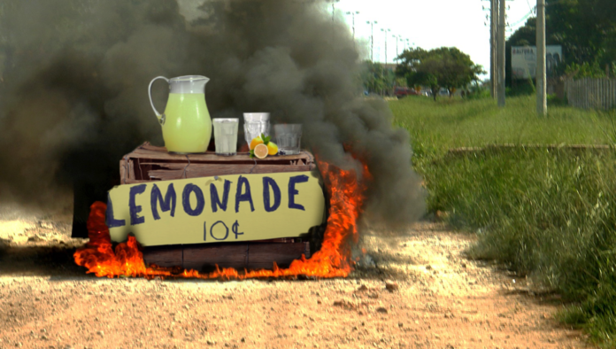

My story started at the ripe young age of 4 when I made my first crisp, fresh glass of homemade lemonade. I was hooked and wanted to share my love of this God sent beverage with the world! With the help of mom and some spare cardboard we found in the garage, we constructed my first lemonade stand.
Then in the summer of '69, on a hot hot day I came back from retrieving more ice inside to find my lemonade stand ablaze. Apparently, the rays of the sun had been concentrated by my lemonade pitcher and lit the top cardboard surface on fire. The stand was gone before I even considered grabbing the garden hose.
I was distraught for days as I reassessed the sole purpose of my life. Then one magical morning, I stepped outside and saw a brand new, yellow VW bus standing on the driveway! My mom had gathered all her life's savings to give me an opportunity to share my passion with the country. I've been spreading cheer from coast to coast ever since.
